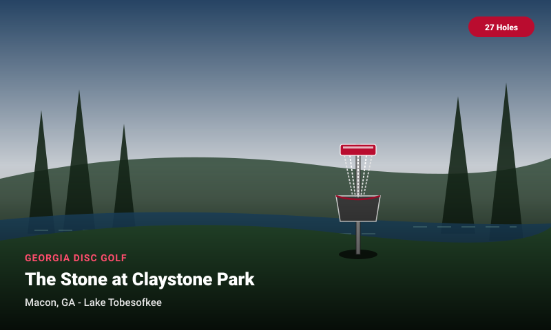

The Stone at Claystone Park
"The Stone" at Claystone Park is the flagship disc golf facility of Macon and home to the Macon Aces Disc Golf Club. Set along the scenic shores of Lake Tobesofkee, the course features 27 holes that weave through hardwood forests, elevation drops, and dramatic shoreline water carries. Multiple pin positions on nearly every hole offer diverse configurations for both casual rounds and sanctioned tournaments like the Macon Music Open.
"The Stone is my home course and the crown jewel of Macon disc golf. The views over Lake Tobesofkee are unbeatable, but be cautious with risk-reward water carries on holes 8 through 11. Bring an overstable fairway driver like a Firebird or Raptor to battle the afternoon thermal winds coming off the lake."